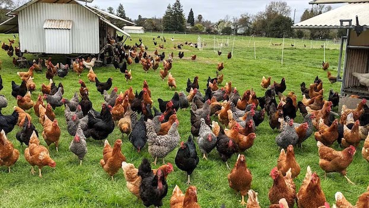

Chickens

Chickens are common animals found on farms. Some of the things they are used for include:
Producing eggs
Using their meat for cooking purposes
Pecking everything and anything in existence
More info found
here
.